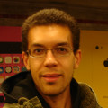

Our Team
Advisory Board
C. Titus
Brown is an assistant professor at Michigan State
University in the CSE and Microbiology departments, where he works
on data-driven biology

Shreyas
Cholia works on science gateway, web and grid
technologies for the National Energy Research Scientific Computing
Center (NERSC) at Lawrence Berkeley National Laboratory, where he
works to make high-performance scientific computing more
transparent and accessible. He went to Rice University where he
studied Computer Science and Cognitive Sciences.
Carole
Goble is Professor of Computer Science in the
University of Manchester, and has spent the past twenty years
developing innovative computing approaches in knowledge
management, distributed computing and social computing to support
scientific researchers in a wide variety of areas, including
Taverna, BioCatalogue, myExperiment, and SEEK. She is a partner
in the UK's Software Sustainability Institute.
Marian
Petre is a Professor of Computing at the Open
University. She holds a Royal Society/Wolfson Research Merit Award
in recognition of her research on expertise in software
design. With degrees in both Psycholinguistics and Computer
Science, Marian's research spans empirical studies of software
development, representation and visualisation for software design,
psychology of programming, human-centred computing, and computer
science education.

Mark
Plumbley is Director of the Centre for Digital Music
(C4DM) at Queen Mary, University of London, and leads
the SoundSoftware.ac.uk
project. His work in audio signal analysis includes beat tracking,
music transcription, source separation and object coding, using
techniques such as neural networks, independent component
analysis, sparse representations and Bayesian modeling.
Ethan White
is an Associate Professor in the Department of Biology and the
Ecology Center at Utah State University. He is a recipient of the
prestigious National Science Foundation CAREER "Young
Investigators" Award. He is a proponent of open and reproducible
science and serves on the editorial boards of both PLOS ONE and
PeerJ.
Instructors
Aron Ahmadia works at the intersection
of applied mathematics, software engineering, and application
domains as diverse as adaptive optics, semiconductor lithography,
and ice-sheet modeling. His focus is in the collaborative
development of robust, reproducible, and scalable software tools
for computational science.
Joshua Ainsley
is a Postdoctoral Scholar at Tufts University,
where he applies bioinformatic and machine learning approaches to neuroscience research
aimed at better understanding learning and memory.
As someone who had to slowly gain programming skills to understand the large biological data sets generated by his research,
he is excited to make the process a bit easier for others.
Carlos
Anderson is a Ph.D. candidate in Evolutionary Biology
at Michigan State University, where he is studying the genetic
mechanisms of speciation using artificial life. He obtained his
B.S. in Computer Science and M.S. in Biology at the University of
Central Florida.

Dhavide
Aruliah is an associate professor at the University of
Ontario Institute of Technology in Oshawa, Ontario. His research
interests are in scientific computing, specifically in
computational inverse problems, numerical linear algebra, and the
numerical solution of PDEs.
Camille Avestruz
is a PhD candidate and National Science Graduate Research Fellow in the Physics Department at Yale University.
She uses numerical simulations to study clusters of galaxies;
in particular, she is interested in how active black holes affect galaxy cluster evolution.
Camille is also active in a number of outreach activities and is committed to promoting diversity in STEM fields.
Diego Barneche is a macroecologist who is passionate about global patterns of diversity,
macroevolution,
and statistical and mathematical modelling.
He loves learning and improving his programming skills for science.
Nichole Bennett
is a Ph.D. candidate in Ecology, Evolution, and Behavior at The University of Texas at Austin,
where she is studying climate change impacts by investigating local adaptation and thermal biology
in a butterfly-plant system.
During fall semesters, she organizes a weekly informal
Introduction to Biological Statistics Course.
She also hosts a weekly science radio show
They Blinded Me With Science
on 91.7FM KVRX Austin and coordinates
Science Under the Stars,
a free, outdoor lecture series that helps graduate students communicate their research to the public.
John Blischak is a graduate student at
the University of Chicago. His research focuses on the
transcriptional response of human macrophages to infection
by Mycobacterium tuberculosis. He greatly benefited from
attending a Software Carpentry boot camp and enjoys passing along
these useful skills to other scientists.
Azalee Bostroem is a Senior Research
and Instrument Analyst at the Space Telescope Science Institute.
She is primarily responsible for organizing the development of the
calibration pipelines of the two spectrographs on the Hubble Space
Telescope (the Cosmic
Origins Spectrograph
and Space Telescope
Imaging Spectrograph). She also collaborates on a project using
the Space Telescope Imaging Spectrograph to derive the properties
of massive stars.
Erik Bray is a software engineer in
the science software branch at Space Telescope Science Institute,
where he works primarily on supporting Hubble and JWST science
software. His software experience ranges from web development to
kernel hacking, and in his "free" time he's working on an MS in
Applied Physics.
Jennifer Bryan is an Associate
Professor in the Statistics Department and the Michael Smith
Laboratories at the University of British Columbia in
Vancouver. She's a biostatistician specialized in genomics and
takes a special interest and delight in data analysis and statistical
computing.
After 13 years of slogging in the software industry
trenches, Rosangela
Canino-Koning returned to university to pursue a PhD in
Computer Science and Evolutionary Biology at Michigan State
University. In her copious spare time, she reads, hikes, travels,
and hacks on open source software.
Chris Cannam is a software developer
with the Sound Software project at Queen Mary, University of
London. He has had extensive experience as a commercial software
developer and on numerous open source applications, particularly
in the music and audio fields.

Adina Chuang Howe received her PhD in
Environmental Engineering. She is currently a postdoctoral
research scientist at Michigan State University, where she uses
skills learned from Software Carpentry to study microbial
communities in the environment.
Neil
Chue Hong is Director of
the Software Sustainability
Institute, and is based at the University of Edinburgh. His
research interests are in community engagement and development,
software sustainability, and the integration and analysis of
data.
Stefano Cozzini
is half split between CNR/IOM,
where he coordinates all the center's HPC activities,
and its small start-up company,
where he tries to promote HPC to a wider audience.
He enjoy teaching IT and HPC all around the world.
Karen Cranston is the Training
Coordinator and Informatics Project Manager at the National
Evolutionary Synthesis Center
(NESCent). She is an evolutionary
biologist interested in phylogenetic methods, phyloinformatics and
an evangelist for data sharing and data interoperability in
biology. Karen is the lead PI
of Open Tree of Life, an
NSF-funded project to synthesize published evolutionary trees.
Steve
Crouch is a software architect at
the Software Sustainability
Institute, and is based at
the University of
Southampton. He assists researchers and their communities by
consulting on software that is integral to their research.
Emily Davenport
s a graduate student in the Department of Human Genetics at the University of Chicago.
Her research interests took her from a purely wet-lab biology background to dry-lab, computational territory
while studying the human microbiome and genomics.

Matt
Davis is a software engineer at
DataPad where he works on all levels
of the application stack. In his previous jobs he worked at the
Space Telescope Science Institute and NASA Goddard. Matt likes to write
open source Python and help bring programming to everyone who needs it.
Neal Davis
is the Training Coordinator for Computational Science and Engineering
at the University of Illinois at Urbana-Champaign,
where he conducts training across a range of traditional engineering software programs and packages.
His professional interests include engineering pedagogy,
the foundations of computing,
and the history of science.
Ross Dickson has a Ph.D. in
computational chemistry, and has been back and forth between
academia and the software development industry a few times over
the years. Now he helps profs, post-docs, and students in Atlantic
Canada solve research problems involving high-performance
computers.
Jonah Duckles
is a data scientist with the University of Oklahoma's IT informatics group,
specializing in geospatial analysis, ecological forecasting and data management.
He holds a BS in Physics and an MS in Forestry and Natural Resources,
both from Purdue.
Jonathan
Dursi is an astrophysicist with twenty years'
experience in computational science. He has taught courses in
computing from the desktop to supercomputers in Canada, the US,
and South Africa. In 2000, as part of the US DoE ASC Flash team,
he won a Gordon Bell Award, one of supercomputing's highest
accolades.
Justin Ely is a Research and
Instrument Analyst at the Space Telescope Science Institute where
he supports the science operations of the Hubble Space
Telescope. Primarily, he uses Python to monitor and improve the
performance of the two on-board spectrographs, the Cosmic Origins
Spectrograph and the Space Telescope Imaging Spectrograph.
Richard
Enbody is an Assistant Professor at Michigan State
University. He earned his Ph.D. in Computer Science at the
University of Minnesota in 1987 and his B.A. in Mathematics at
Carleton College in 1976. His primary research interest is in
computer security. Together with Bill Punch he wrote
The Practice of Computing Using Python
with editions in Python 2 and Python 3 and a translation in Chinese.
Daniel Falster is a post-doc at Macquarie University in Sydney, Australia.
He uses a combination of math, computer models, and large data sets
to test fundamental ideas about the processes shaping terrestrial vegetation and plant diversity.
He is passionate about science, open data, reproducible research, and teaching biologists to code.
Luis Figueira is a software developer
with significant experience working in research environments. He
graduated as an electrotechnical engineer, specialising in speech
processing. For the past 3 years he's been working in the
SoundSoftware project,
based in the Centre for Digital Music,
Queen Mary University of London, helping researchers from the
audio and music fields to build more robust and reusable research
software.
Julián García
is a computational scientist with interested in social and biological systems.
He works as a postdoctoral fellow at the
Max Planck Institute for Evolutionary Biology,
where he uses computers to understand the evolution of social behavior.
Before moving to Germany he lived in Colombia and the Netherlands.
Molly Gibson
is a Ph.D. candidate in Computational & Systems Biology at Washington University in Saint Louis.
Her research focuses on the ecological resistance and resiliency of microbial community structures and functions
to perturbation by antibiotic treatment.
Ivan Gonzalez
is a condensed matter physicist living in Boston.
After learning a lot from the Software Carpentry on-line lessons,
he now enjoys teaching others.
Julia Gustavsen is a PhD student at
the University of British Columbia in Biological Oceanography.
Her thesis work focuses on the changes that take place in marine
viral communities over time and space. She received her BA and BSc
from the University of New Brunswick.
Richard
"Tommy" Guy is a PhD student in Computer Science at the
University of Toronto. While at Wake
Forest University, he helped
create Verbal
Victor, an app to help children with communication
difficulties.
Steven
Haddock is a Research Scientist at the Monterey Bay
Aquarium Research Institute and adjunct Associate Professor at
U.C. Santa Cruz, studying bioluminescence and biodiversity of
marine zooplankton. He
co-authored Practical
Computing for Biologists with Casey Dunn.
Mike Hansen is a PhD student in
Computer Science and Cognitive Science at Indiana University. His
research interests include quantifying the complexity of software
using cognitive models of programmers. He has designed and
developed software professionally for almost ten years, and enjoys
teaching others the skill and art of programming.
Ted Hart is a post-doc at the
University of British Columbia where he studies the evolution of
sociality in spiders using individual based models and
evolutionary algorithms. He received his PhD from the University
of Vermont and is a member of the rOpenSci development
group.
Konrad
Hinsen is a theoretical physicist by training who
currently works on protein structure and dynamics and scientific
computing at the Centre de Biophysique Moléculaire in
Orléans (France) and at the Synchrotron Soleil in Saint
Aubin (France). He is also a department editor for Computing
in Science and Engineering.
Chris Holdgraf
studies cognitive and computational neuroscience at UC Berkeley.
He is interested in linking higher-level theories of the mind with information processing in the brain,
currently exploring how we make sense of noisy or incomplete auditory information.
He also writes for and co-manages
The Berkeley Science Review
and co-organizes Beyond Academia.

Katy
Huff is a postdoctoral scholar in nuclear engineering at the
University of California – Berkeley. She received her Ph.D. from the
University of Wisconsin – Madison, where she helped found The Hacker Within.
Damien Irving
is a PhD candidate in Meteorology at the University of Melbourne,
where his research focuses on the climate of the high southern latitudes.
He also works part time with the Information Technology Services (Research) department at the University,
assisting geoscience researchers with their computing.
In his spare time, Damien blogs
about research best practice in the weather/climate sciences.
Paul Ivanov
is a graduate student in the Vision Science program at UC Berkeley.
His interests include eye tracking, GPGPU programming, and natural image statistics.

Mike Jackson has a background in
human-computer interaction and is a software architect at
the Edinburgh Parallel
Computing Centre. He is also a consultant with
the Software Sustainability
Institute.
Jessica Kerr has channeled an
undergraduate physics degree into a programming career. She loves
computer science, especially when it intersects with math and
complexity theory. Her goals include acquiring new tastes, sharing
enthusiasm, and keeping two crazy-happy children alive.
W. Trevor
King is a PhD student in Physics at Drexel
University. He studies single-molecule protein unfolding, focusing
on open source experiment control and automation
using Comedi and Python. This has
led to exposure to a wide range of software, and he moonlights as
an evangelist for open source software in general, and Git and
Python in particular.
Justin Kitzes
is a postdoc in the Energy and Resources Group at the University
of California, Berkeley. His research centers on the intersection
of quantitative ecology and conservation biology, with a focus on
developing general methods to predict spatial patterns of
biodiversity in human-altered landscapes.
Steven Koenig is studying the
production of microbial exopolysaccharides using renewable
resources at
Technische Universität München,
Straubing Center of Science,
Chair of Chemistry of Biogenic Resources
as a Ph.D. candidate.
Bernhard Konrad is a PhD student in
Mathematical Biology at the University of British Columbia. He
studies early within-host events after HIV exposure and how
treatment or a vaccine could prevent infection. He received his
Masters at the Karlsruhe Institute of Technology in Germany, where
he focused on functional analysis.

Karin Lagesen has a PhD in
bioinformatics and has since focused on the processing of high
throughput sequencing data in various forms. With a background in
both computational science and molecular biology, she has taught
programming and computational analysis to both master and PhD
students and believes that this should be an integral part of any
biologist's toolbox.
Ian
Langmore is a mathematician/engineer working as a data
scientist in New York City. He currently works at Johnson
Research Labs and teaches an Applied Data Science class in the
Department of Statistics at Columbia University.
Chris Lasher works at the interfaces
of molecular biology, computer science, and software
development. In 2007, he lead a weekly Software Carpentry boot
camp at Virginia Tech for postdocs and graduate students. To this
day, Chris continues to improve his good programming habits and
extol the virtues of Python, his most beloved programming
language.
Doug
Latornell is a professional engineer with post-graduate degrees
in experimental and computational fluid mechanics and
modeling and control of robotic manipulators. He
works for Nordion in Vancouver, where he helps produce
medical isotopes by proton irradiation from cyclotrons.
Side projects include work on a coupled biology and physics model of deep estuaries
that, through the winter
months, calculates a daily prediction of the date of the first
spring phytoplankton bloom in the Strait of Georgia.
Over the last 10 years,
Luke Lee
has written software for everything from Python desktop and web applications
to embedded C drivers for solid state disks.
He currently writes scientific Python applications for Blueback Reservoir in Houston, Texas,
and is an active member of the Houston Django and Python user groups.
Yuxi Luo
is a graduate student at LanZhou University.
He loves data science,
especially applying knowledge to solve problems in diverse areas.
He believes that he can learn more when teaching others.
Stephen
McGough is the Research Manager for
the Digital
Institute at Newcastle
University. His research interests lie in the areas of high
performance and high throughput computing along with their
implications for green computing.

Jessica
McKellar is a kernel engineer living in Cambridge,
MA. She is a Python Software Foundation board member and an
organizer for the largest Python user group in the world. With
that group she runs the Boston Python Workshops for women and
their friends—an introductory programming pipeline that has
brought hundreds of women into the local Python community and is
being replicated in cities across the US.
Emily
Jane McTavish is a PhD student at the University of
Texas studying the complex evolutionary history of Texas Longhorn
cattle using genomic data. In May 2013 she is starting a postdoc
at University of Kansas developing tools for updating and revising
the tree of life, as part of
the Open Tree
project.
Ian
M. Mitchell is an associate professor in the Department
of Computer Science at the University of British Columbia. His
research interests include scientific computing, cyber-physical
systems, formal verification, and reproducible research.
Jason
Montojo received his Master's degree in Computer
Science from the University of Toronto in 2009. He currently
works for the GeneMANIA
team.
Ben Morris is a Ph.D. student in the
Department of Biology at the University of North Carolina. His
research uses large datasets and ecoinformatics to answer
questions about patterns in species distribution and community
assembly. He also develops open source software to make ecology
and biodiversity data more accessible.
Lex
Nederbragt is a self-taught bioinformatician working
with high-throughput DNA sequencing data at Oslo University,
Norway. His speciality is the assembly of genomes from short
pieces of sequence information.
Randy Olson
is a PhD candidate in Computer Science & Ecology, Evolutionary Biology, and Behavior at Michigan State University.
His research interests are primarily focused on artificial intelligence and evolutionary processes,
where he is seeking to combine the two to evolve increasingly-intelligent algorithms.
An avid research blogger,
Randy regularly publishes blog posts about Python,
scientific computing,
open science,
and artificial intelligence.

Aleksandra Pawlik works for the Software Sustainability Institute at the University of Manchester and is responsible for supporting scientific software communities development. She's also finishing her PhD about documentation in scientific software.
Jason
Pell is a Ph.D. student in Computer Science and
Quantitative Biology at Michigan State University who is primarily
interested in tackling large next-generation DNA sequencing
datasets. He holds a B.A. in Computer Science from Grand Valley
State University.
Fernando
Perez is a research scientist at the Helen Wills
Neuroscience Institute at U.C. Berkeley. His work involves the
development and implementation of new algorithms and tools for
neuroimaging, with a special interest in functional MRI. He is
also actively involved with the development of new tools for
high-level scientific computing, mostly using the Python
language.
Karthik Ram is a quantitative ecologist at UC Berkeley
broadly interested in the structure and dynamics of food webs in terrestrial systems.
He blogs at Inundata,
and is also the co-founder of rOpenSci,
a project which aims to foster reproducible research and data reuse through open source software tools.
Ariel
Rokem is a post-doctoral researcher at the Stanford
Psychology Department. His research focuses on the functional
neuroanatomy of the human visual system. Since his time as a PhD
student at UC Berkeley, he has been involved in developing open
source software for neuroimaging.
Jory Schossau is a Ph.D. student at
Michigan State University studying evolution through simulation,
complexity measurement, and game theory. He is also involved in
various outreach and education projects from educational game
design to classroom teaching.
Anthony
Scopatz has a PhD in Mechanical and Nuclear Engineering
from the University of Texas at Austin, and is now a post-doc in
the Astrophysics Department's FLASH Center at the University of
Chicago.
Michael Selik is a data
scientist at Infochimps. Over his career, he has
worked for major enterprises and venture-backed startups delivering sophisticated analysis
and technology project management services from hyperlocal demographics inference to
market share forecasting. He received a MS Economics, a BS Computer Science, and a BS
International Affairs from the Georgia Institute of Technology.
Jeff
Shelton is a PhD candidate in Mechanical Engineering at
Purdue University, studying the control aspects of human
motion. Following more than two decades in industry, he is
interested in aligning educational methods with the evolving
societal roles performed by engineers.

Raniere Silva is a undergraduate of applied
mathmatics of University of Campinas working with linear programming.
His focus is in free/open software for the collaborative
development of robust, reproducible, and scalable software tools
for computational science and open science/access.
Rachel Slaybaugh
is an Assistant Professor of Nuclear Engineering at the University of California Berkeley
where she develops radiation transport methods for application to reactors, shielding, and nuclear security applications.
Rachel writes in C++, Python, and Fortran, and has research experience with massively parallel code systems.
Joshua Ryan Smith specializes in
electronic devices based on wide-bandgap semiconductor materials
and in the past has done work in surface science and
nanofabrication. Joshua is a native of North Carolina and received
his Ph.D. in physics from North Carolina State University; he
learned Python programming in graduate school and has an interest
in understanding the design of experiments in terms of the
practices of software development.
Sarah Supp
received her Ph.D. student in Ecology from Utah State
University. Her research interests lie in combining field studies,
macroecological analyses and ecoinformatics to understand the
dynamics that drive change at the community and ecosystem level.

Tracy Teal
is a bioinformatics specialist at Michigan State University,
having completed an NSF Postdoctoral Fellowship in Biological
Informatics. She has developed open-source tools for metagenomics
analysis and, as a member of the Great Lakes Bioenergy Research
Center, studied the effects of land use change on microbial
communities and greenhouse gas flux.
After working as a Python software
engineer, Nelle Varoquaux returned to
university in 2011 to pursue an applied mathematics degree,
specializing in machine learning. She is now using her skills to
solve biological problems, such as reconstructing the 3D
architecture of the genome.
Bogdan Vera is a PhD student in the
Centre for Digital Music, at Queen Mary University of London, and
previously studied at the University of York and Bournemouth
University. His research is about distributed music technologies
that can enable musicians to more effectively perform and compose
music over great distances using the internet.
Alex Viana is a Research and
Instrument Analyst at the Space
Telescope Science Institute where he supports the operations
of the Hubble Space Telescope. Primarily working in Python and SQL
he has contributed to a wide range of scientific and educational
projects at STScI.
Jens von der Linden
is a PhD student in plasma physics at the University of Washington.
He is designing and building an experiment to simulate astrophysical jets in the lab.
His focus is the interaction between twisted magnetic fields and twisted flows in the jets and their stabilizing effects.
He uses Python for data analysis,
and has also worked on plasma fluid simulations in Fortran and Python.
Ben Waugh
writes and maintains software, teaches programming and a bit of
physics, manages computer systems and drinks lots of coffee in
the Department of Physics and
Astronomy at University
College London, mostly in
the High-Energy Physics
Group.

Lynne Williams
works at the Rotman-Baycrest Research Institute, where she studies
the cognitive neuroscience of language development over the
lifespan and develops statistical techniques to analyze large
multivariate data sets. Her most recent work is concerned with
pattern classifiers in brain imaging and age-associated patterns
of variability in brain activation.
Greg Wilson
started the Software Carpentry project in 1998. He has been a
professional software developer, an author, and a university
professor. Greg received his PhD in Computer Science from the
University of Edinburgh in 1993.
Paul Wilson
is an Associate Professor at the U. Wisconsin-Madison where he
teaches nuclear engineering. His research
group, CNERG, delivers new
capability for the simulation of nuclear systems. The Hacker
Within was born from his research group as he tried to impart
Software Carpentry skills upon his graduate students.
Christopher Woods is a researcher at
the University of Bristol, where he develops software for
modelling medicinal drugs and proteins. He obtained his PhD in
physical chemistry at the University of Southampton, where four
years hacking through established academic codes gave him a keen
appreciation of the importance of clean design, good
documentation, testing and version control.
Support
Jorge
Aranda obtained his Ph.D. in Computer Science at the
University of Toronto. He is now a postdoctoral researcher at the
University of Victoria, where he studies coordination and
communication in software teams.
Amy Brown
handles communication and scheduling for Software Carpentry.
In her other life, she's a freelance editor and self-publishing consultant,
raises two girls,
and sings as often as possible.
Jon Pipitone completed his MSc in
Computer Science at the University of Toronto in 2010. He has been
active since then in a variety of scientific, environmental, and
social justice causes.